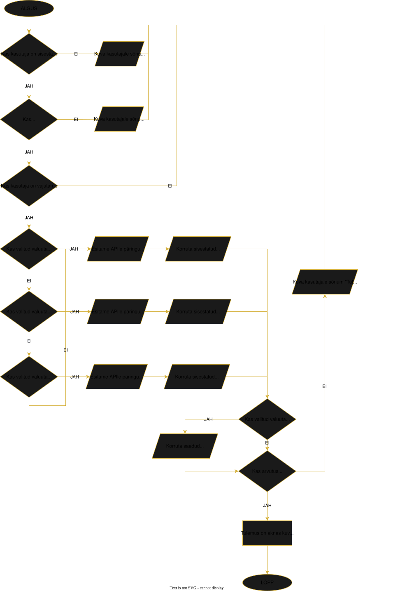

Minu bitcoin kalkulaator
Mida teeb bitcoin kalkulaator?
Lõpptulemus
Bitcoin kalkulaatori käivitamisel väljastab see kasutaja poolt sisestatud coinide koguse valitud valuutas.
Kuidas see töötab?
Programm kontrollib esiteks kas kõik vajalikud väljad, bitcoin kogus ja sihtvaluuta, on täidetud. Valikus on neli
väärtust: EUR, USD, GBP ja EEK. Probleemi korral väljastab veateate, et mingi sisend on jäänud andmata.
Kui kõik sisendid on olemas, siis kalkulaator esitab päringu bitcoin API lehele COINDESK valuuta väärtuse kohta valitud valuutas, välja arvatud EEK. EEK puhul võetakse
API'ist EUR'i väärtus ja korrutatakse 15,6466'ga. Programm kalkuleerib kokku API andmed valuuta osas ning esitab
need akna all vasakus nurgas.
Bitcoin kalkulaatori vooskeem

Bitcoin repositoorium